Main Dishes
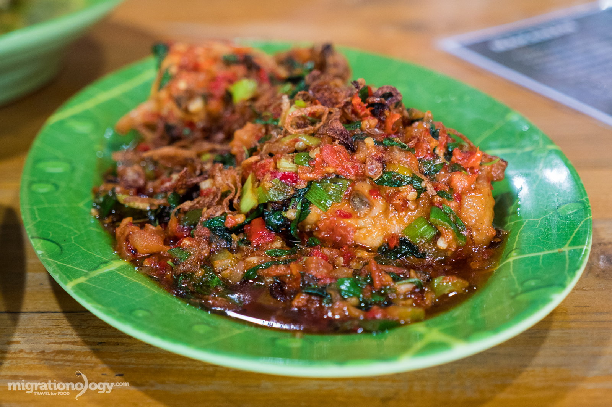
Rica-Rica
Special spicy flavor from Sulawesi Island
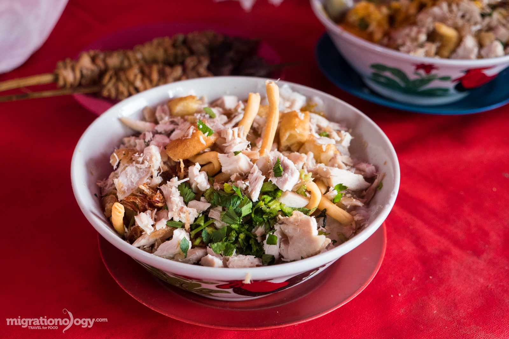
Bubur Ayam
Indonesian Jook, common dish for Breakfast
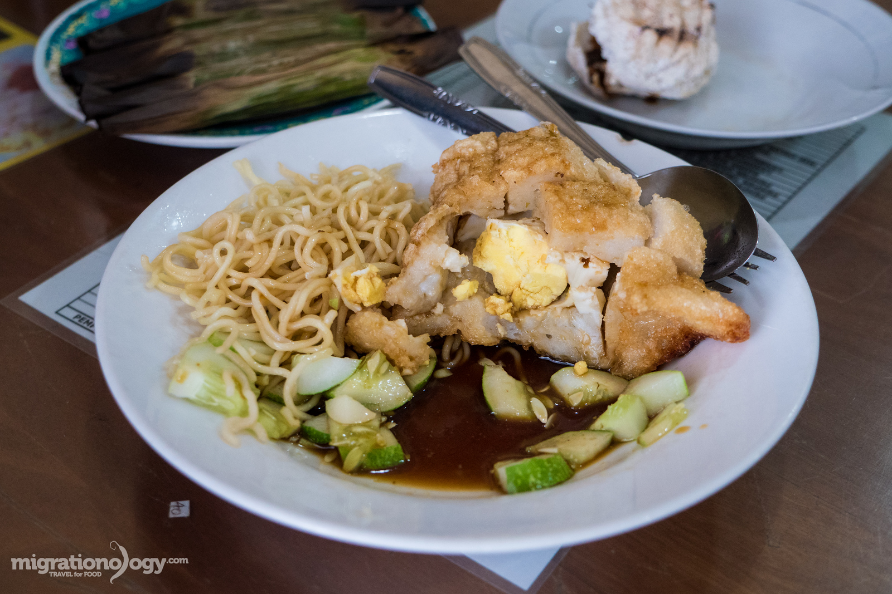
Pempek
Fish cake with spicy sweet sauce
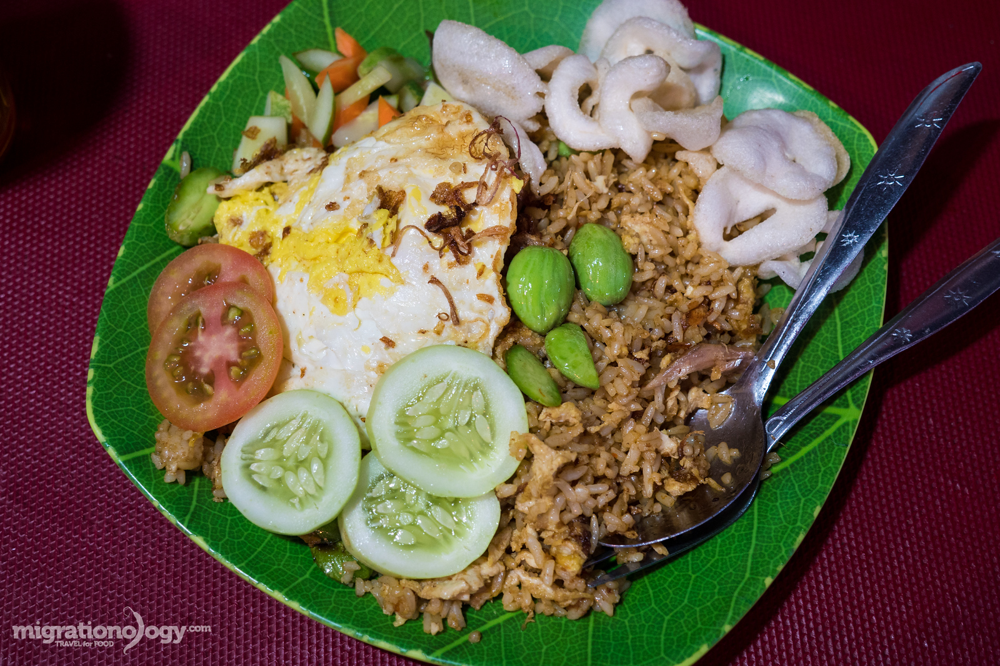
Nasi Goreng
Common dish for any ocassion
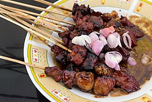
Satay
Satay with sweet soy sauce and chili
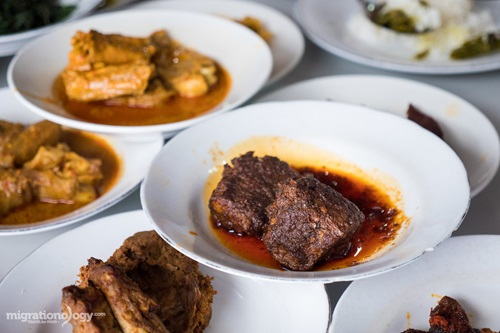
Rendang
Indonesian's authentic dish
Desserts & Beverages
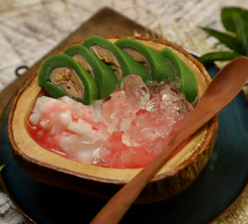
Es Pisang Ijo
Banana with ricecake and coconut
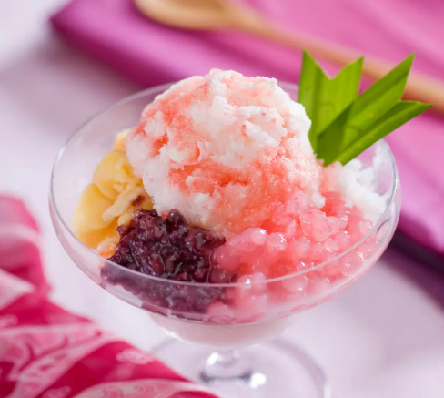
Es Doger
Indonesian popular dessert
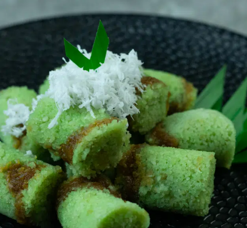
Kue Putu
Indonesian traditional cake
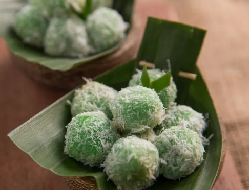
Klepon
Coconut Pandan sticky rice with brown sugar
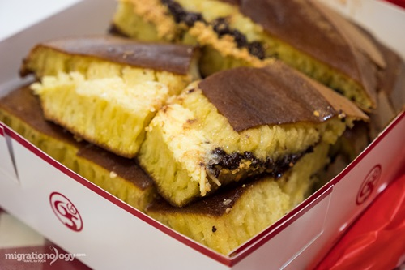
Martabak Manis
Indonesian authentic dessert